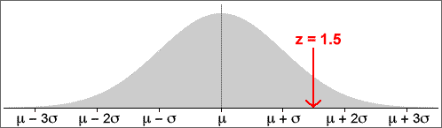

Standard deviations from the mean
Any x-value can be expressed as a number of standard deviations from the mean — its z-score.

or equivalently,
x = μ + z × σ
Probabilities and z-scores
Any probability (area) relating to a normally distributed random variable, X, can be expressed in terms of z-scores:
Note in particular that: